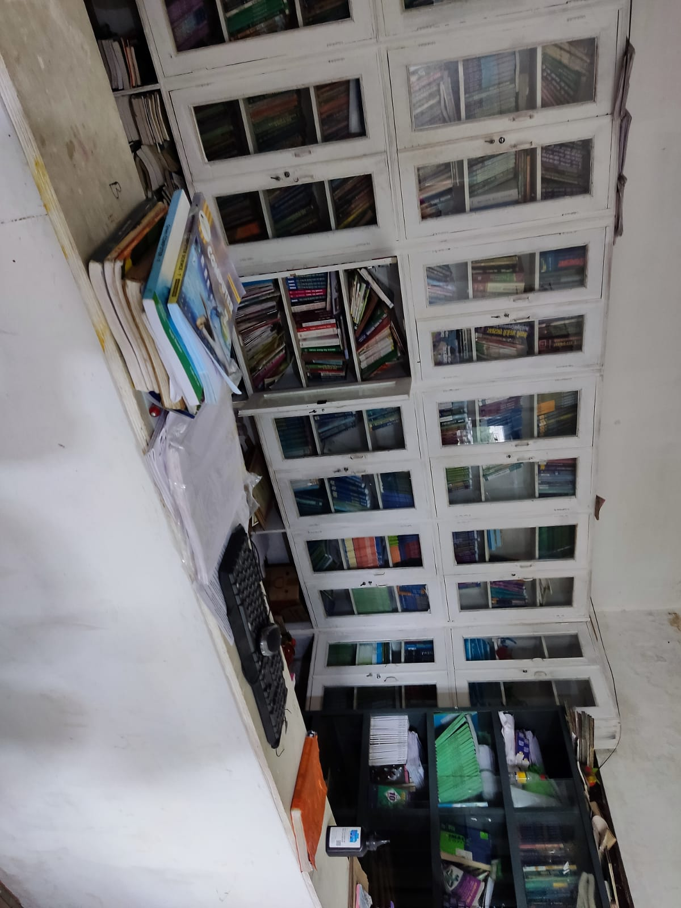
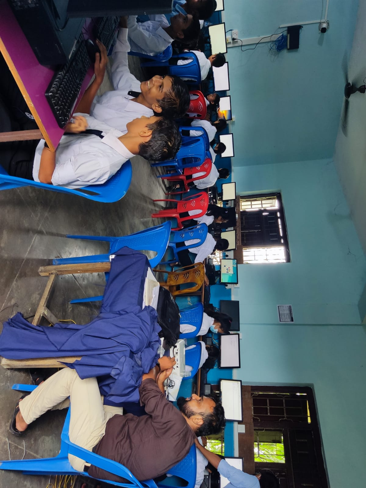
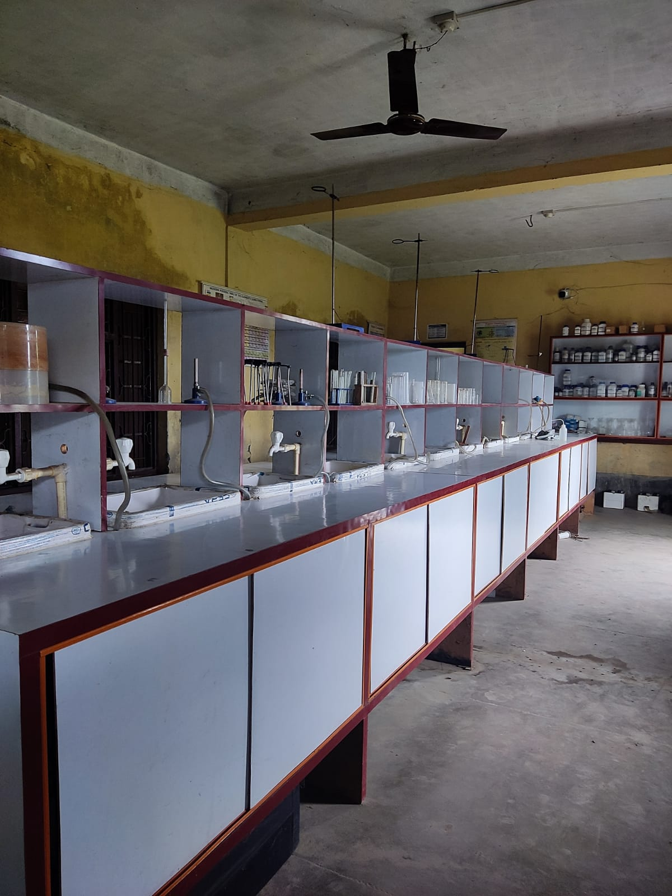

Shree Pashupati Secondary School
Bahradashi-3 Rajgadh (Jhapa)
.jpg)
Library

A library is a collection of materials, books or media that are accessible for use and not just for display purposes.
A library provides physical (hard copies) or digital access (soft copies) materials, and may be a physical location or a virtual space, or both.
Many student in school in nepal struggle with learning to read. As many teachers and parants will attest, reading failure has exacted tremendous long-term consequence for children's developing self confidence and motivation to learn , as well as for their later school performance. We have a well furnished library to help the children read to prevent the predictable consequences of early reading failure . We put reading first .
we provide different books for different classes students . we give the books for students to borrow and return thar after some days.
Many student in school in nepal struggle with learning to read. As many teachers and parants will attest, reading failure has exacted tremendous long-term consequence for children's developing self confidence and motivation to learn , as well as for their later school performance. We have a well furnished library to help the children read to prevent the predictable consequences of early reading failure . We put reading first .
we provide different books for different classes students . we give the books for students to borrow and return thar after some days.
Computer Lab

A computer lab is a space where computer services are provided to a defined community.
These are typically public libraries and academic institutions.
Generally, users must follow a certain user policy to retain access to the computers.
We has alltotal 48 computers for onetime practical.we provides the survellencefor better stricting the students for study. we provide well maintained lab for making the student well balanced enviroment for better study
We has alltotal 48 computers for onetime practical.we provides the survellencefor better stricting the students for study. we provide well maintained lab for making the student well balanced enviroment for better study
Science Lab

A scientific laboratory is a special place where experiments are conducted. This school provides the apparatus, beakers, burners, and other items required to carry out experiments.
Laboratory teaching assumes that first-hand experience in observation and manipulation of the materials of science is superior to other methods of developing understanding and appreciation.
Laboratory training is also frequently used to develop skills necessary for more advanced study or research.the purpose of science lab in this school is to figure out what the purpose of your test, experiment or research actually is.
Additional Tuition
Many student in school in nepal struggle with learning to read. As many teachers and parants
will attest, reading failure has exacted tremendous long-term consequence for children's
developing self confidence and motivation to learn , as well as for their later school
performance. We have a well furnished library to help the children read to prevent the
predictable consequences of early reading failure . We put reading first .